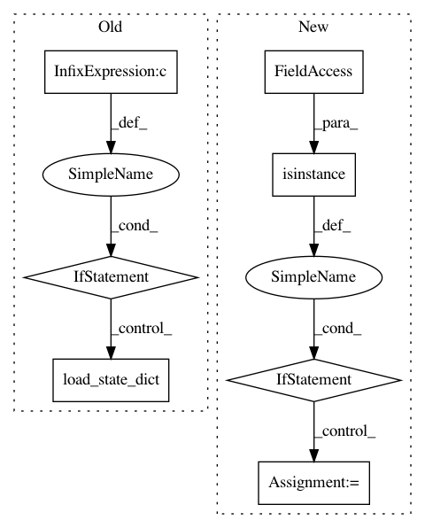

9ba91fa13cbb1e7bc4069e46469b34abb5ca4869,models/base_model.py,BaseModel,load_networks,#BaseModel#Any#,78
Before Change
save_filename = "%s_net_%s.pth" % (which_epoch, name)
save_path = os.path.join(self.save_dir, save_filename)
net = getattr(self, "net" + name)
if len(self.gpu_ids) > 0 and torch.cuda.is_available():
net.module.load_state_dict(torch.load(save_path))
else:
net.load_state_dict(torch.load(save_path))
// print network information
def print_networks(self, verbose):
print("---------- Networks initialized -------------")
for name in self.model_names:
if isinstance(name, str):
After Change
save_filename = "%s_net_%s.pth" % (which_epoch, name)
save_path = os.path.join(self.save_dir, save_filename)
net = getattr(self, "net" + name)
if isinstance(net, torch.nn.DataParallel):
net = net.module
// if you are using PyTorch newer than 0.4 (e.g., built from
// GitHub source), you can remove str() on self.device
state_dict = torch.load(save_path, map_location=str(self.device))
// patch InstanceNorm checkpoints prior to 0.4
for key in state_dict:
self.__patch_instance_norm_state_dict(state_dict, net, key.split("."))
In pattern: SUPERPATTERN
Frequency: 3
Non-data size: 7
Instances
Project Name: richzhang/colorization-pytorch
Commit Name: 9ba91fa13cbb1e7bc4069e46469b34abb5ca4869
Time: 2018-05-22
Author: tongzhou.wang.1994@gmail.com
File Name: models/base_model.py
Class Name: BaseModel
Method Name: load_networks
Project Name: facebookresearch/pytext
Commit Name: fc52f79ed3dda250875b3ce9f3c241b80d643ef3
Time: 2020-07-07
Author: mikaell@fb.com
File Name: pytext/models/module.py
Class Name:
Method Name: create_module